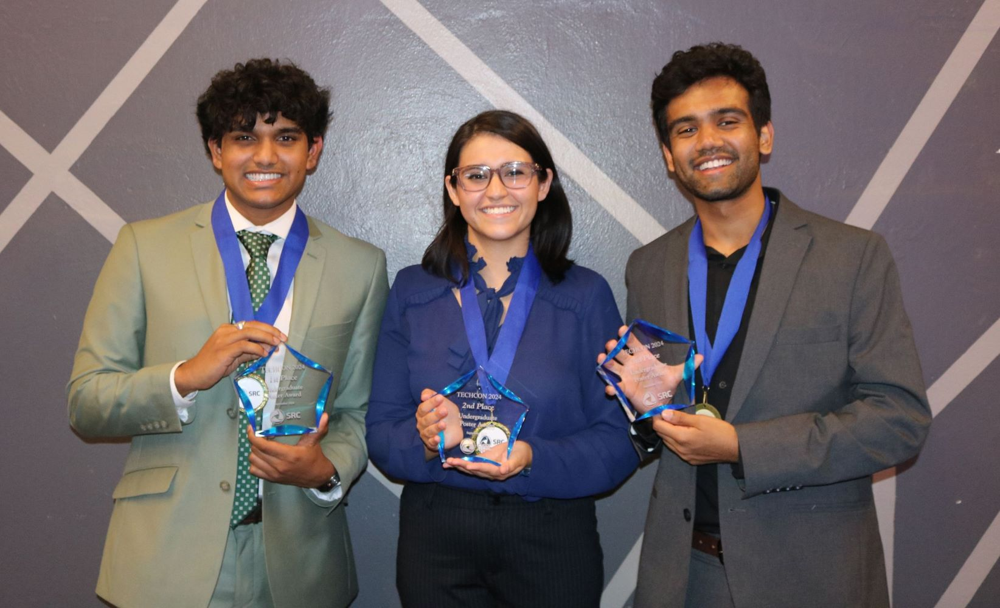

About TechCon
TechCon is one of the most influential technology conferences globally, bringing together industry leaders,
innovators, and enthusiasts to explore the future of technology.
Founded in 2010,
TechCon continues to lead the way in fostering innovation and collaboration among technology professionals.
Our History
TechCon began in 2010 in San Francisco, created by a group of tech enthusiasts who wanted to provide a platform to share ideas, discuss emerging technologies, and build lasting collaborations. Initially focused on mobile app development, the conference rapidly expanded to include cutting-edge topics like artificial intelligence, blockchain, and sustainable tech. Over the years, TechCon has transformed into an international event, drawing thousands of participants annually.
Our Mission
At TechCon, our mission is to inspire innovation, foster collaboration, and provide attendees with the tools and knowledge they need to advance their careers and businesses. We aim to be at the forefront of technology, enabling individuals and organizations to shape the future.